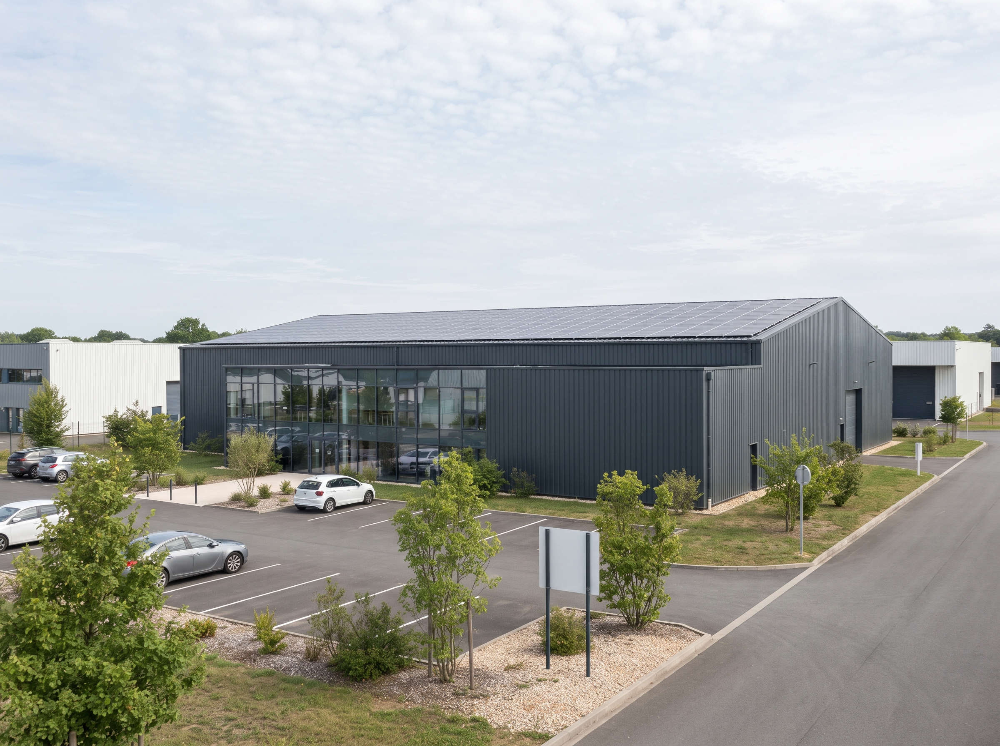
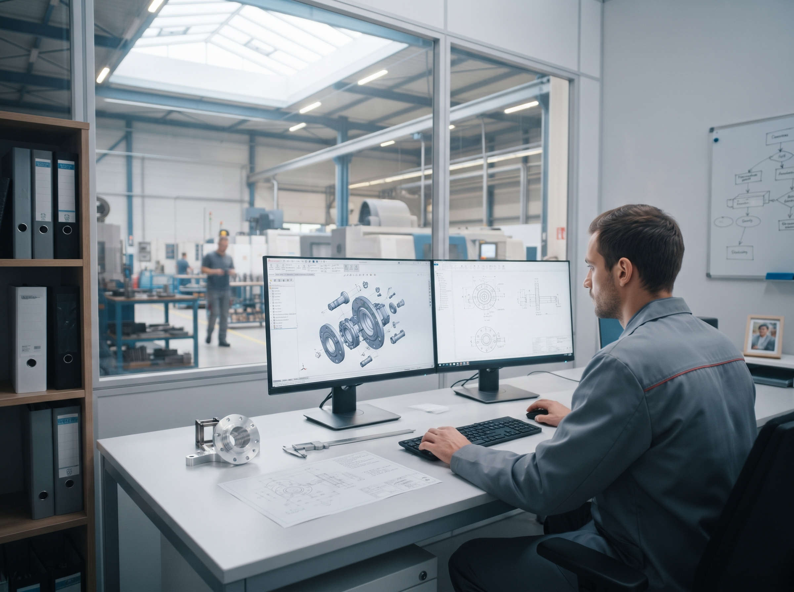

L'entreprise
Une PME industrielle indépendante, installée au bord de la Loire.
Notre histoire
- 1994Création d'un atelier d'usinage de six personnes à Angers.
- 2003Ouverture de l'activité mécano-soudure.
- 2008Certification ISO 9001.
- 2015Jean-Luc Bernard prend la direction générale.
- 2019Installation dans le Parc d'activités des Rives : 4 200 m² d'atelier.
- 2026Mise en service de panneaux photovoltaïques sur la toiture de l'atelier.

Ce qui guide notre travail
La parole tenue
Un délai annoncé est un délai respecté. Si un retard menace, vous le savez tout de suite.
La précision
Nous mesurons, nous traçons, nous documentons.
La transmission
Chaque année, nous formons des apprentis à nos métiers.
La sécurité
Personne ne prend de risque pour gagner une heure.
L'équipe de direction
42 salariés au total, dont 30 à l'atelier.

Le bureau des méthodes
Quatre techniciens transforment vos plans en gammes de fabrication et en programmes pour nos machines. Ils sont aussi vos interlocuteurs pour optimiser une pièce avant sa fabrication.